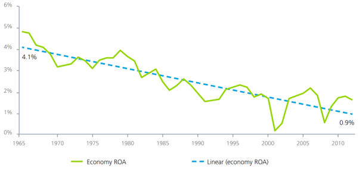

Het rendement op activa is het jaarlijkse netto-inkomen, gedeeld door de totale waarde van de activa. Het kengetal geeft aan hoeveel winst een organisatie maakt voor iedere euro aan activa. Een laag ROA indiceert dat het management inefficiënte investeringen maakt in activa. Een te hoog ROA daar en tegen, indiceert dat het management te weinig investeert.
In figuur 1 wordt het ROA weergeven. De groene lijn is het gemiddelde ROA in de economie. De blauwe trendlijn laat een duidelijke dalende trend zien. Er kan gespeculeerd worden over de mogelijke oorzaken van deze daling. Echter is er een fenomeen dat voor niemand onopgemerkt kan zijn gebleven, en in direct verband staat met het rendement op activa; de exponentiële technologische ontwikkelingen.
De vorderingen in technologie doen de producten van nu sneller in waarde dalen dan ooit. Neem bijvoorbeeld mobiele telefoons waarvan jaarlijks nieuwe modellen en versies worden geïntroduceerd aan de markt. Dit maakt de drempel voor toetreden in bijvoorbeeld IoT een stuk hoger. Naast de ontwikkelingskosten, moet er worden geïnvesteerd in de infrastructuur, onderhoud, en het up to date houden van de hardware. Stil staande bij het feit dat we aan de voet staan van een tijdperk dat meer mogelijkheden biedt dan we ons op dit moment kunnen voorstellen, is investeren in IT simpelweg een groot risico.